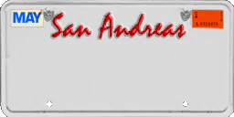

Ustawienia GUI

Watermark
Pokazuj watermark na ekranie
Pokazuj watermark przy włączonej komendzie /cam
Minimapa
Miniapka po prawej stronie
HudEdit
Pokazuj statystyki postaci
Kolor główny GUI
Kształt hudu
0 KMH

BRAK
0 KMH
BRAK